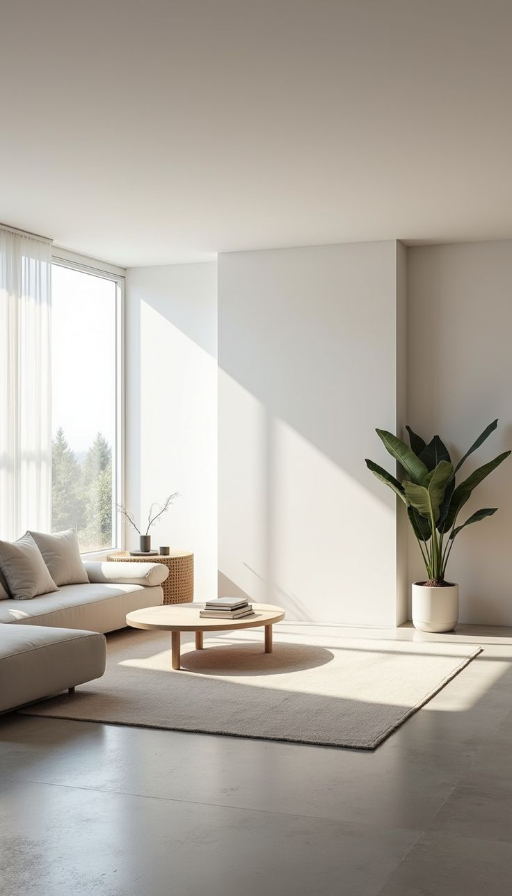

Цей стиль базується на принципі "менше — це більше". Він характеризується лаконічністю, чистими лініями, нейтральною палітрою кольорів та відсутністю зайвого декору. Кожен предмет у просторі має своє чітке призначення.
Мінімалізм допомагає знизити рівень візуального "шуму", що безпосередньо зменшує тривожність та стрес. Відсутність безладу дозволяє мозку розслабитися, фокусуватися на головному та сприяє глибокому відновленню сил.